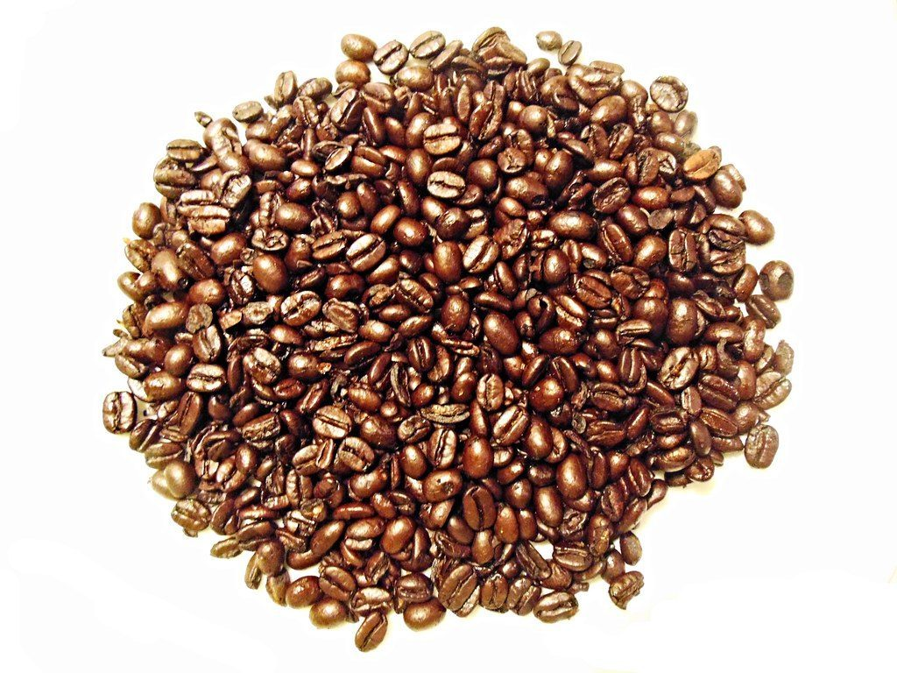
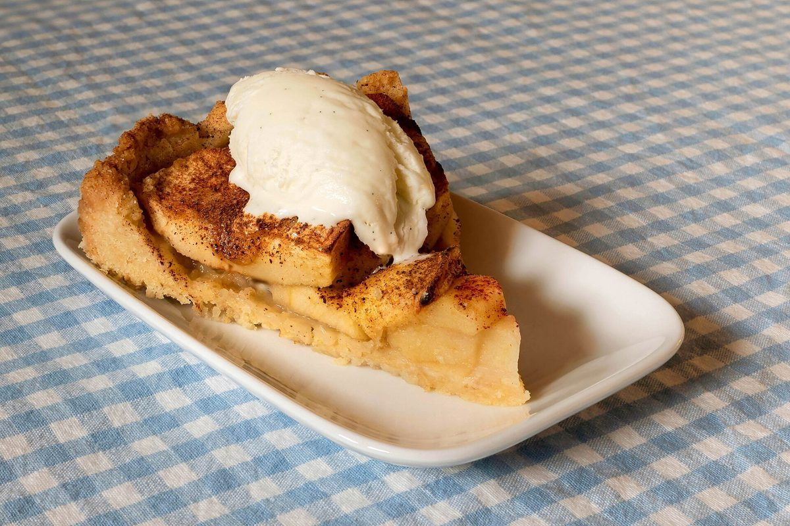
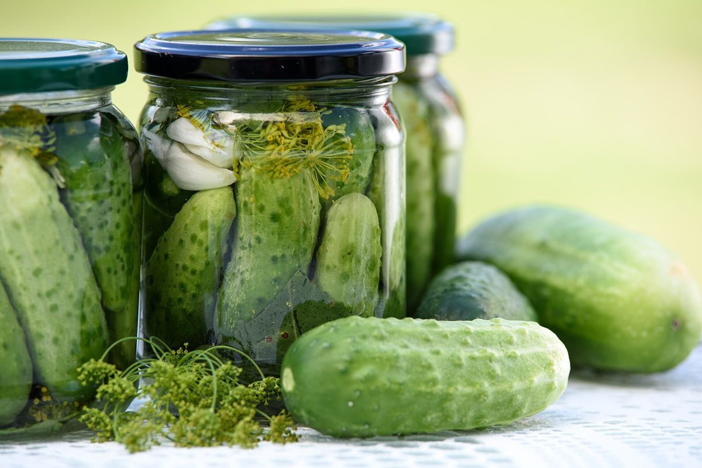

店のこと
二段ベッドの部位の配置図
お店の詳しい情報は準備中です。ここでは、制作側が考えたデザインの考え方を紹介します。


制作側の連想
番号は、部位の番号
ホームの図にある1〜6の番号は、それぞれ二段ベッドの部位の名前に対応します。二段ベッドの部位を図にしたもので、制作側の連想です。お店の理念・由来とは無関係で、実際の製品の仕様を示すものでもありません。
1柵
上段の縁に取り付けた手すり状の部分で、寝返りのときに体が外へ出ないようにするところ。
2床板
上段でマットレスを受ける板の部分で、すき間のあるすのこ状の形もある。
3はしご
上段へ登り降りするための段のついた部分で、枠に引っ掛けて使う形もある。
4支柱
上の段と下の段を支える縦の柱で、四隅に立つ。
5連結ボルト
支柱と横の枠をつなぐ金具で、ねじで締めて固定する。
6下段のフレーム
下の段でマットレスを受ける枠の部分で、床に近い位置にある。
写真(イメージ)
写真(イメージ)



写真はイメージです。お店のものではありません。